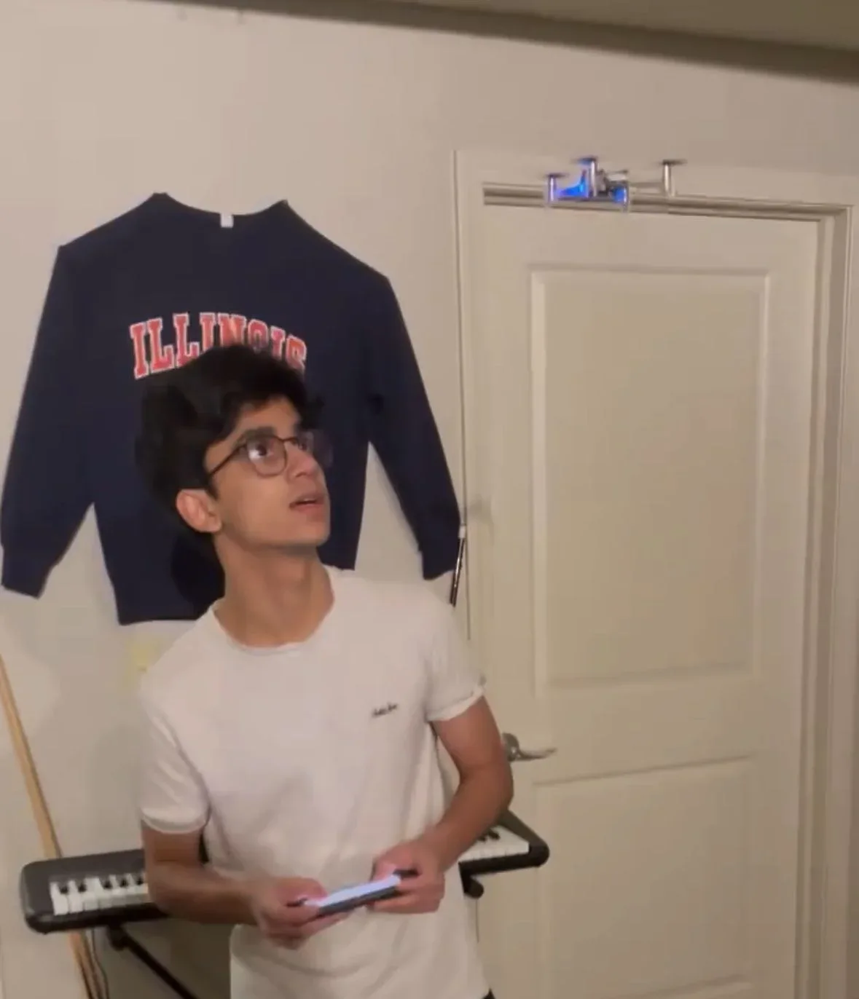
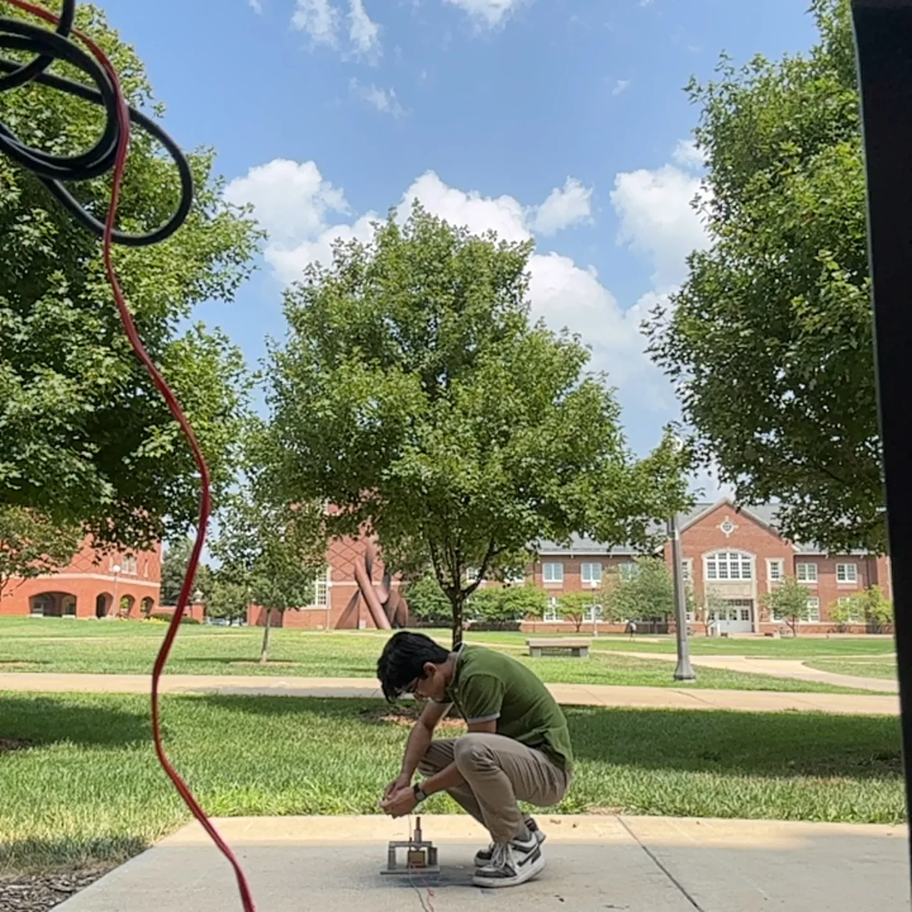
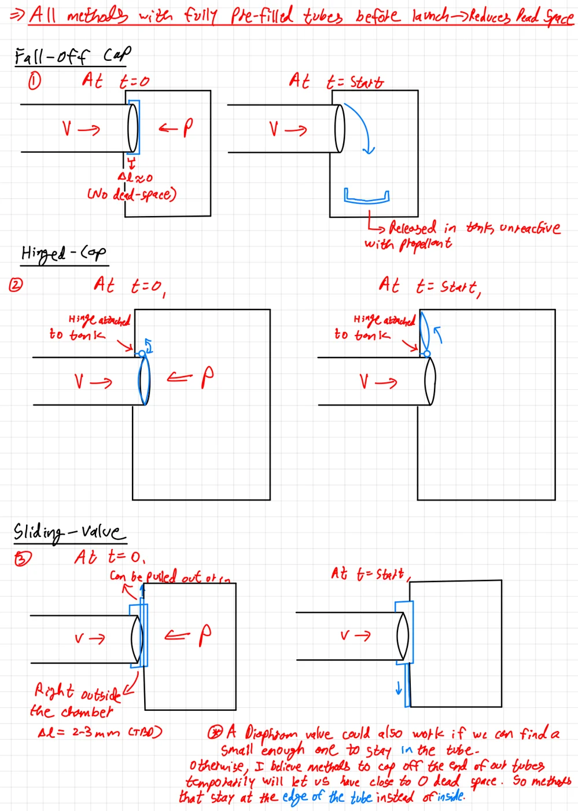

CMU / 2026-present
Project NOMORA
Research with Prof. Matt Travers on hybrid ground-air robots for coastal exploration.
Project briefResearch / Publications / Writing
I currently work on field robotics at Carnegie Mellon. My earlier research covered autonomous systems, rocket trajectory modeling, and space propulsion.
CMU / 2026-present
Research with Prof. Matt Travers on hybrid ground-air robots for coastal exploration.
Project briefGuidance, autonomous and embedded systems, and experiment design for UAVs and ground robots.

An indoor quadrotor demonstration from my autonomy work.
Using the Drag Equation and Euler’s Method in Python to Predict Model Rocket Flight Trajectories.

I developed a Python trajectory simulation using 24 flight tests and more than 25 solid rocket-motor thrust tests. The model achieved less than 4% error in the evaluated flights.
I also built a graphical interface for plotting altitude and drag force over time, with and without drag. Over six months, I developed the paper with advisor feedback and prepared a 30-minute conference presentation.
Chavda, K. J., & Arnett, H. R. (2024). Using the Drag Equation and Euler’s Method in Python to Predict Model Rocket Flight Trajectories. AIAA Region III Student Conference, Akron, Ohio. Paper AIAA 2024-84150.
The paper received third place in the undergraduate category in April 2024 and was published on AIAA’s ARC platform in July.
Read the paperThird place in the undergraduate category at the 2024 student conference.
Foundational design work on a chemical-electrospray propellant dual-feed system for zero-gravity operation.

I worked with PhD students and fellow undergraduates to prepare engineering requirements and identify the system’s material and instrumentation needs. I assembled a parts list for the dual-feed system within two weeks.
I also trained and was certified to use laboratory equipment including 3D printers, a thermal-vacuum chamber, a solar simulator, and soldering equipment.
A website I started to write about physics and space while I was in school.
I had become interested in physics and space exploration by middle school. After learning about the Feynman method, I started a WordPress blog to explain what I was learning.
Over time, I took on more challenging topics and customized the blog into a website where readers could discuss the ideas. Writing gave me a reason to work through a subject carefully enough to explain it.